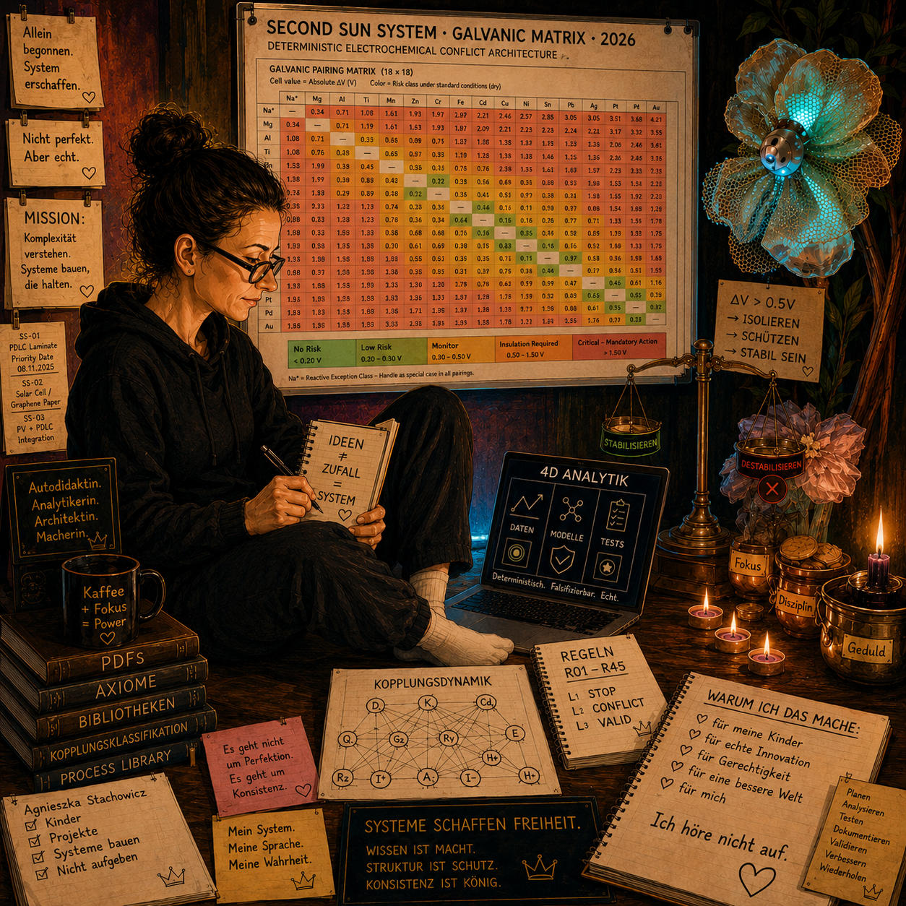

Modelle
Strukturen sichtbar machen. Konflikte verstehen. Zusammenhänge analysieren.

SECOND SUN SYSTEM
Ein neues Fragment für das gemeinsame Verständnis komplexer Systeme.
Willkommen. Schön, dass du da bist.
Denkraum betretenWarum dieser Denkraum existiert.
Komplexe Systeme scheitern selten zufällig. Häufig entstehen Konflikte dort, wo Materialien, Funktionen, Prozesse oder Entscheidungen aufeinandertreffen.
Dieser Denkraum ist eine offene Sammlung von Beobachtungen, Modellen, Veröffentlichungen und Forschungsnotizen. Kein abgeschlossenes Lehrbuch. Sondern ein Ort, an dem Systemarchitekturen wachsen dürfen.
Strukturen sichtbar machen. Konflikte verstehen. Zusammenhänge analysieren.
Öffentliche Gedanken, Forschungsnotizen und ausgewählte Fragmente.
Systemarchitekturen und Demonstratoren im interdisziplinären Kontext.
Hier finden öffentliche Dokumente ihren Platz: Whitepaper, Forschungsnotizen und ausgewählte Veröffentlichungen.
Zu öffentlichen Anfragen01
Ein wachsender Denkraum für Struktur, Kopplung und Verständlichkeit.
02
Konkrete Formen, die Annahmen und Wechselwirkungen erfahrbar machen.
03
Arbeit dort, wo verschiedene Perspektiven eine gemeinsame Sprache brauchen.
Gedanken. Beobachtungen. Denkzettel. Neue Perspektiven. Neue Fragen.
Hier werden nach und nach neue Denkzettel erscheinen.
Mom. Systemarchitektin. Autodidaktin.
Ich entwickle Systemarchitekturen, um komplexe Zusammenhänge verständlich, nachvollziehbar und überprüfbar zu machen.
Meine Arbeit beginnt mit Zuhören — und mit der Überzeugung, dass Struktur ein Weg zu mehr Klarheit sein kann.
07 — Kontakt
Ich suche Menschen, die Freude daran haben, komplexe Systeme gemeinsam zu verstehen: Ingenieure, Materialwissenschaftler, Informatiker, Designer und kritische Denker. Unterschiedliche Perspektiven machen ein System besser.
Kontakt aufnehmen